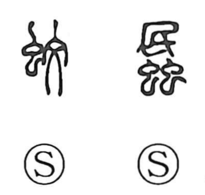

蚊

Kun: ka | On: bun
mosquito
Explanation
蚊 is a phono-semantic character: the radical 虫 marks it as an insect, while 文 serves as the phonetic element, giving the On reading bun. Both bun and the native reading ka are echoic, evoking the faint buzz or flutter of a mosquito’s wings. The ancient Shuowen glosses it simply as a flying insect that bites people.